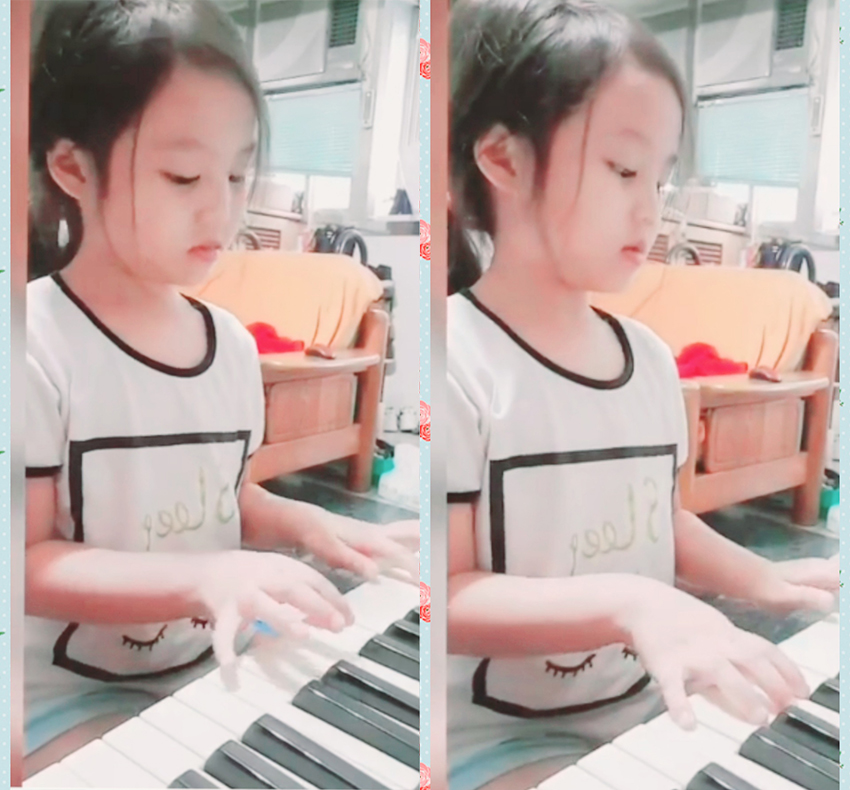
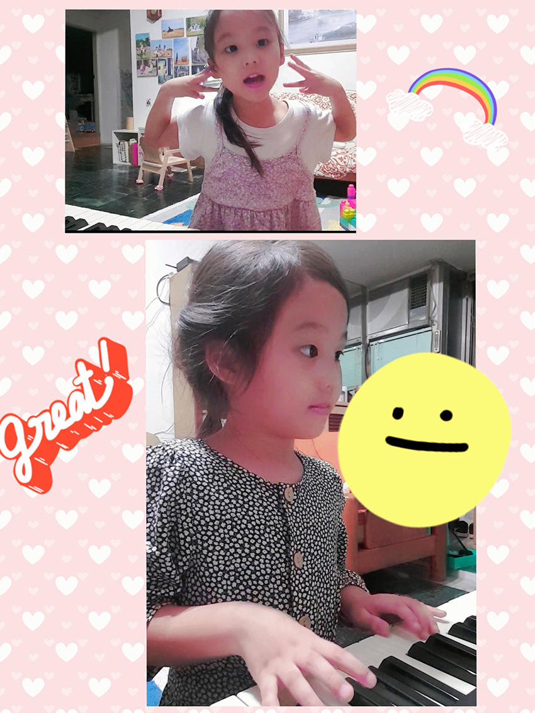

常常聽人家說不要把爸媽的夢想寄託在小孩的身上，其實這個想法我很認同。但必須承認，我~依舊會冀望小寶貝，可以成為一個會彈琴的氣質女生XD(但好像總脫離不了莫非定律的魔咒哈，沒關係，目前就且彈且走~)。
小時候因為家庭環境的關係，總是極度地羨慕別人能夠彈鋼琴，家裡負擔不起學琴費用，好不容易撐到考上有管樂團的高中，填社團的第一志願就是音樂屬性的社團，可惜因為沒有任何樂理基礎，學習曲子，總得比別的同學來得辛苦練習，而且需要付出好幾倍的時間，才能跟得上團練的節奏，但也不一定彈的好。另外，也永遠不會成為solo獨奏的候選人，選擇樂器方面，更只能挑背景音樂的樂器來演奏，這些因素間接促成我希望自己孩子，能夠成為一位有音樂才藝的女孩。
至於到底為什麼要學琴？除了希望她成為一位為彈琴的女孩之外，最重要的是，培養孩子的上課時專注力，還有一點很重要，學習克服每一次練琴遇到的挫折，我認為這些是很重要且必須要培養的學習態度。
女兒四歲多時，我帶她去參加YAMAHA團體體驗課。在上課前，因為四歲懂人話了，媽媽先跟寶貝說明一下，等等要去體驗一個小班制的音樂課程。YAMAHA的招生體驗課，時間約莫三十分鐘，老師授課時，會帶領孩子們彈琴(最多九位，一位小朋友搭配一台電子琴)。一開始老師準備一些鈴鼓/三角鐵/響板給小朋友們，先進入一起聽音樂，接著一起打節拍，也會請一旁的爸媽，歡樂地加入跟著節奏與小孩同樂。藉由聽從玩樂中學習與互相配合展開彈琴的暖身。小寶貝就跟著老師的節奏，融入活潑趣味的氣氛之中，因為是體驗班，主要是簡單的體驗，然後主任就進來介紹之後的課程，課程設計上有聽、唱、彈、讀、寫及創作等豐富之內容；上課型態則是採唱、聽、唱、彈等交錯方式，來讓小孩一步步進入音樂的學習狀況。
|  |
當天體驗課結束後，我直接問問小寶貝意見，很令媽咪開心的，活潑的她不排斥的說，她想要上課！於是媽媽當下立刻很開心的替她報名去了！
因為小寶貝已四足歲，參與的班級為幼兒班，YAMAHA課程分好幾個階段，我個人認為，四歲這年紀算是已經比較懂事，是很好進入學樂理的狀態。(不過這部分是個爸媽的感覺，應該也是可以依據小孩的穩定度來決定想要學音樂的年紀。)幼兒班課程是大約是二年(四歲~六歲)，女兒從2019年十月份加入。每週一堂課，一次上課50分鐘，過程中，是需要一位家長陪同(同時也是可以訓練家長的耐心呢)。
|  |
老師會透過利用教導孩子舞動身體律動也請爸媽一起陪著小孩學習，另外也會請小朋友們一起到老師身旁練習合唱，認識黑白鍵以及follow老師分部指揮合彈，跟著音樂旋律跟彈。一次次地，每次我與寶貝都會很開心地一週上一次課，即便是刮大風、下大雨，我們還是穿上雨衣騎機車去一起去上課。後來循序漸進從第一季一開始的，只認得DO RE ME FA SO，一直到2020年第二季後，開始學會雙手合手。經過這些過程，其實我深深體認到媽媽(或爸爸)的耐心陪伴練習，對孩子而言，始終是最重要的。每一次上課盡可能的不缺席(即便缺席也一定要擠出時間補課)。同時，家長必須建立規則，小孩一星期至少練彈三次以上，每次至少一次練習10~20分鐘(第一二冊課本)。透過訂定這些規律的練彈原則，來建立孩子自律的習慣(媽媽真的希望是這樣)。
期間會發現，其實雖然多數時間小孩的確是非常沒有耐性，但一旦度過了過渡期；她也是會開心地說：麻麻我要彈琴。偶爾練彈時，跟女兒二個人聽著音樂，很HIGH地跟著音樂像瘋子一樣地舞動，或者二個人一起來合個奏(媽媽其實非常不會彈)，都是一件無比開心美妙的事呢！媽媽希望未來能持續的與女兒快樂學琴下去~